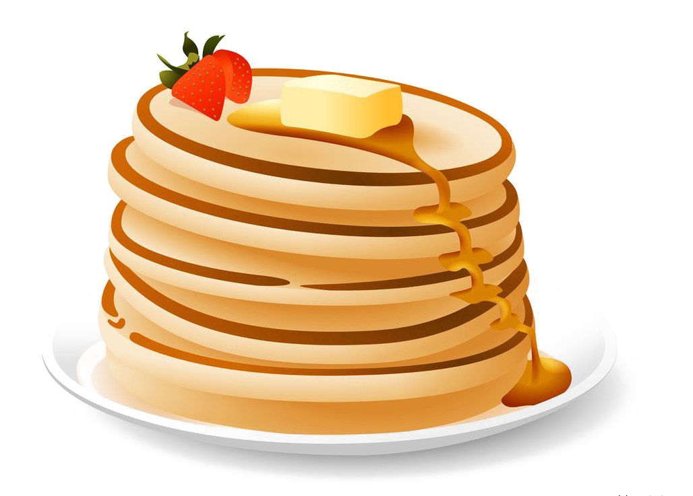

Ingredients
- 1 cup, all-purpose flour
- 2 tablespoons white sugar
- 2 teaspoons baking powder
- 2 pounds ground beef
- 1 teaspoon salt
- 1 egg, beaten
- 1 cup milk
- 2 tablespoons vegetable

Directions
- In a large bowl, mix flour, sugar, baking powder and salt.
Make a well in the center, and pour in milk, egg and oil. Mix until smooth.
- Heat a lightly oiled griddle or frying pan over medium high heat.
Pour or scoop the batter onto the griddle,
using approximately 1/4 cup for each pancake. Brown on both sides and serve hot.
Anna: That's my jam!
Alberta: My favorite